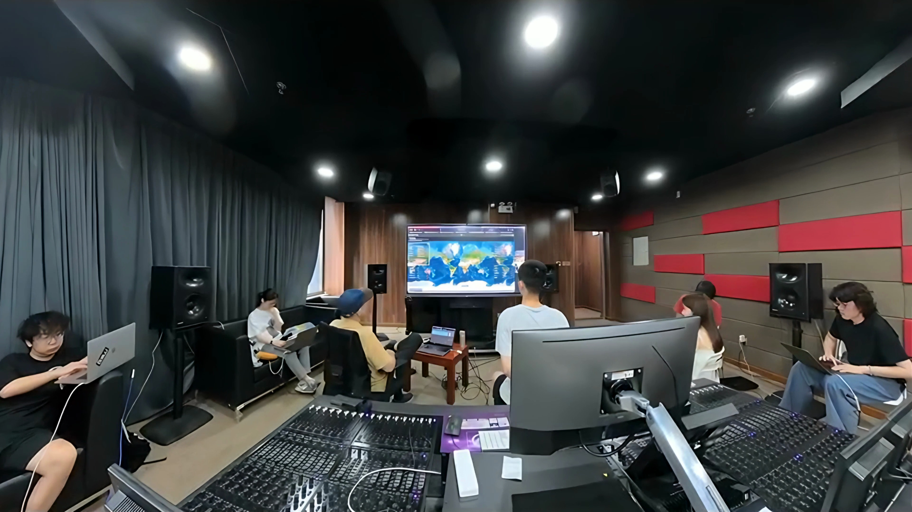
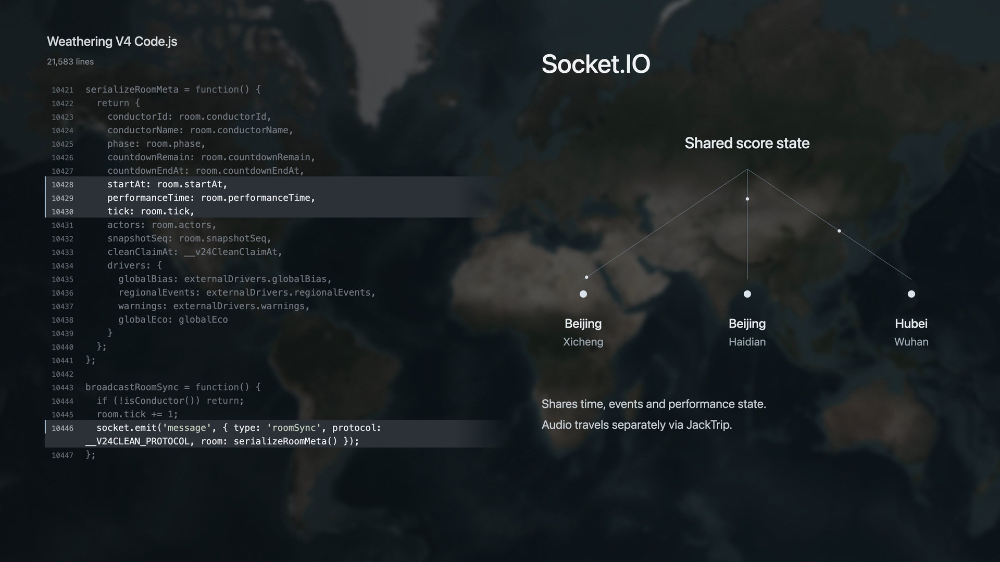

Weathering

Weathering is a six-minute networked digital score for twenty performers across Beijing Xicheng, Beijing Haidian and Wuhan. Earth, water, fire and wind become materials for a shared progression, realised through listening and individual judgment.
About the work
I named the work Weathering for the changes that continue after an event has passed. Its four elemental groups enter, encounter natural events, leave traces and move towards a collective texture. The score sets conditions for this process, while each entrance meets a situation already changed by earlier activity.
Performers read cues for entry, intensity, timbre and effects, then operate TouchOSC to shape locally synthesised sound in SuperCollider. The score itself produces no sound. A common instruction becomes a particular sound through a preset, a physical operation and a performer's judgment of the ensemble.
Socket.IO distributes score time and state; JackTrip carries audio between the three locations. Performers listen to local and remote sounds together. The map organises the score's internal spatial relations, while the actual performance connected Xicheng, Haidian and Wuhan.
Documentation



Tracegenesis
I use Tracegenesis to describe how traces of earlier events continue to shape the conditions of subsequent musical generation. A new instruction meets what earlier activity has left behind.
I bring twenty performers into the same six minutes, but I cannot make them experience the same six minutes.
- Withdrawal and re-entry
- A rest deadline can continue after a part withdraws. It affects whether that part is available for a later entrance, even when its previous sound has ended.
- A handover still underway
- At the water–fire transition, a water part is already marked REST while its displayed amplitude is still falling. The newest role and the unfinished withdrawal belong to the same current task.
- Different paths into convergence
- Parts approach their new amplitude targets from the values they have already reached. Their earlier activity shapes the route into the final texture.
A new role, an unfinished withdrawal
| Score time | Event | Role | Amplitude |
|---|---|---|---|
| 03:19 | Tsunami | PRIMARY | 77% |
| 03:27 | Wildfire | REST | 3% |
| 03:31 | Wildfire | REST | 0% |
A water part across the tsunami–wildfire handover. These values describe visible score states; the sounding result also depends on the performer's operations and the synthesiser's release.
Six-minute form
The presented musical form moves from individual material identities to an uneven collective texture.
- 00:00–02:05
Element entries
Earth, water, fire and wind establish their material identities.
- 02:05–04:45
Events
Earthquake, tsunami, wildfire and hurricane reshape leading, accompanying and suppressed roles.
- 04:45–05:30
Chain reactions
Changing combinations and texture density lead towards convergence.
- 05:30–06:00
Convergence
All four groups are present with unequal strengths.